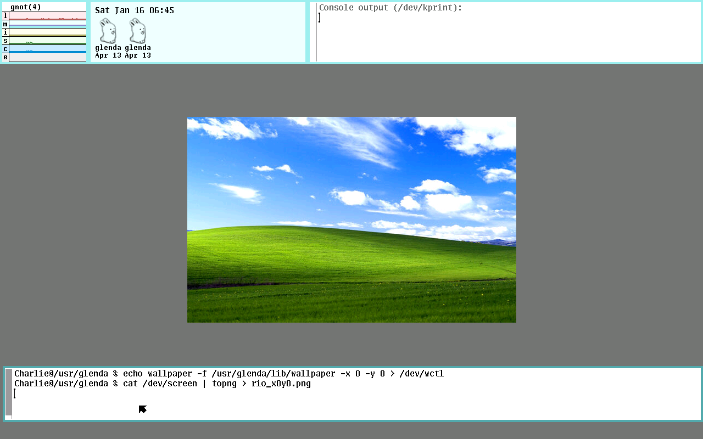
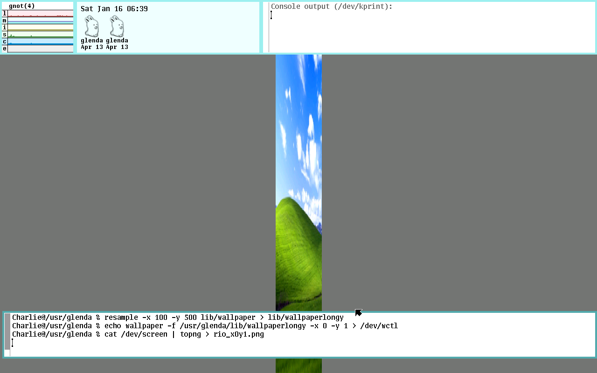
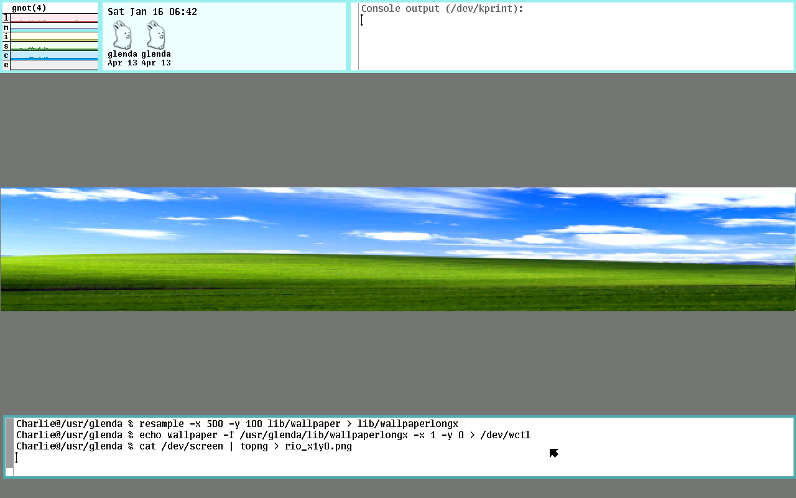
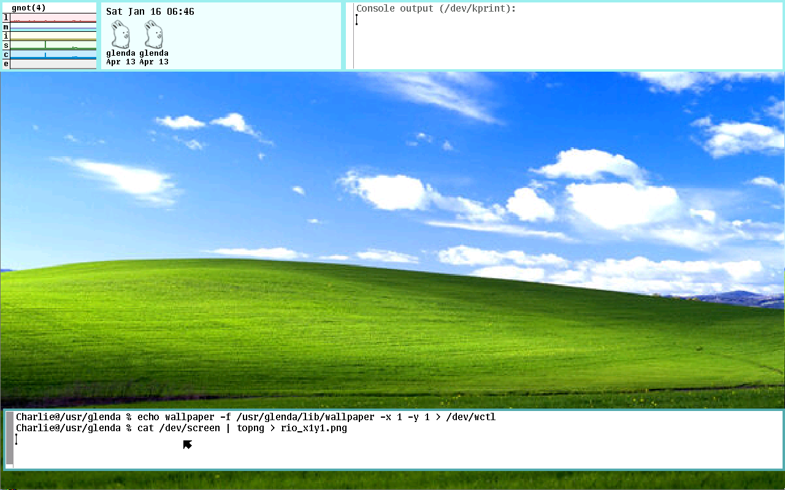
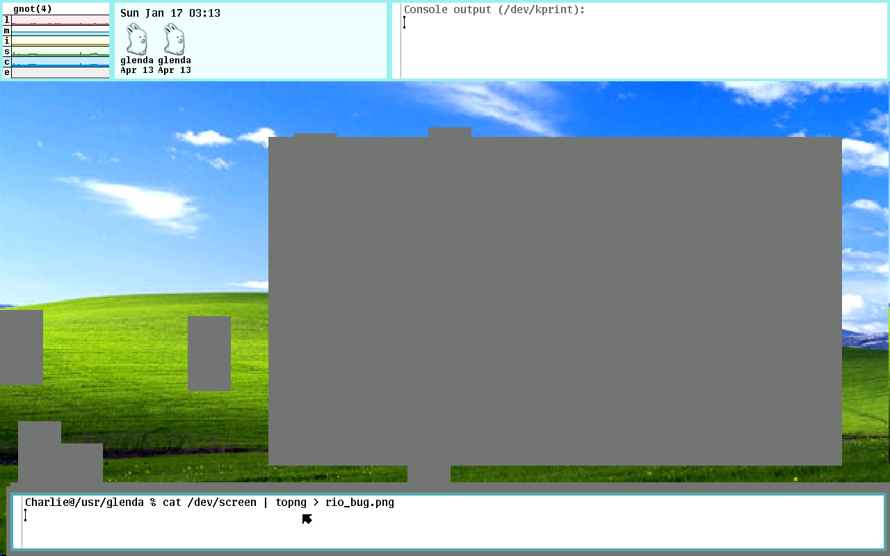
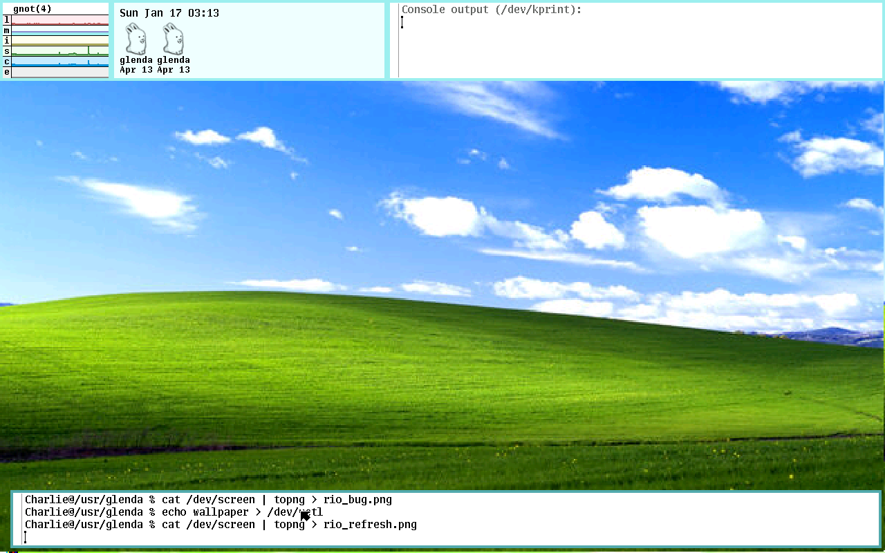

This appears to be my first post in the New Year. It's a little ironic that the post is about finishing a project. Monday night, I posted the source code on GitHub.
Back in October or November, I was in lab with another TA and making jokes about running Doom. I said I wanted to do a similar concept where I put the Windows XP hills background in places it does not belong. Given my research with Plan 9, I decided to start there, not really expecting to get more than a laugh out of it.
I came across Devine Lu Linvega's wallpaper implementation and used it to quickly put together "Plan9 XP":
I wasn't thrilled with the fact I had to manually set the image size and the implementation wasn't very elegant, so I took the time to add a bit of functionality. Based on the size of the image and the size of the screen, the image is resized and centered on the screen. Then, the image and scaling is chosen though commands to the /dev/wctl file:
echo wallpaper -f /usr/glenda/lib/wallpaper -x 1 -y 1 > /dev/wctlI ended up "finishing" the project in late November in order to prioritize work on my thesis proposal. The project was functionally enough to take a break, but still very buggy and not something I was proud enough to share. I spent the my winter break between classes ironing out those bugs and creating something presentable.
While doing some research for my proposal, I came across the following quote by Rob Pike from 2003 on the Plan9 color scheme and design:
the clean appearance of the screen comes mostly from laziness, but the color scheme is (obviously) deliberate. the intent was to build on an observation by edward tufte that the human system likes nature and nature is full of pale colors, so something you're going to look at all day might best serve if it were also in relaxing shades. renee french helped me with the specifics of the color scheme (she's a professional illustrator and my color vision is suspect), once i'd figured out how i wanted it to look. there are still some features of the color system that i put in that i think no one has ever noticed. that's a good thing, in my opinion; the colors should fade away, if you'll pardon the expression.
having used other systems with different approaches to color screens, most especially windows XP (extra pukey), i think tufte was right.
-rob
On one hand, I'd like to formally apologize to Rob Pike, Renee French, and Edward Tufte for creating the exact opposite of their vision. On the other hand, I'm quite proud of how nicely the "extra pukey" hills background fits with the Plan9 pastels. I did keep the #777777 background for centering the image on the screen (which also had to be done manually) and can be seen below.
|

No scaling, image centered |
|

Scaled by y component |
|

Scaled by x component |
|

Scaled by both components |
There is currently one bug I've almost tackled. When you move windows, the window is "erased" and redrawn. When the window is erased, the #777777 wallpaper stays instead of the background image set. I've got a few ideas on how to approach this, but I need to prioritize actual research, especially since refreshing the wallpaper with a /dev/wctl command is a temporary fix.
|

The Bug |
|

The wallpaper refreshed |
The source code is posted on GitHub. Depending on how/when I approach fixing that refresh bug, I might reach out to the 9front folks or make a Reddit post about it. Until then, I'm really happy with this and I'm gonna call it finished for now. It's a good way to start the new year.